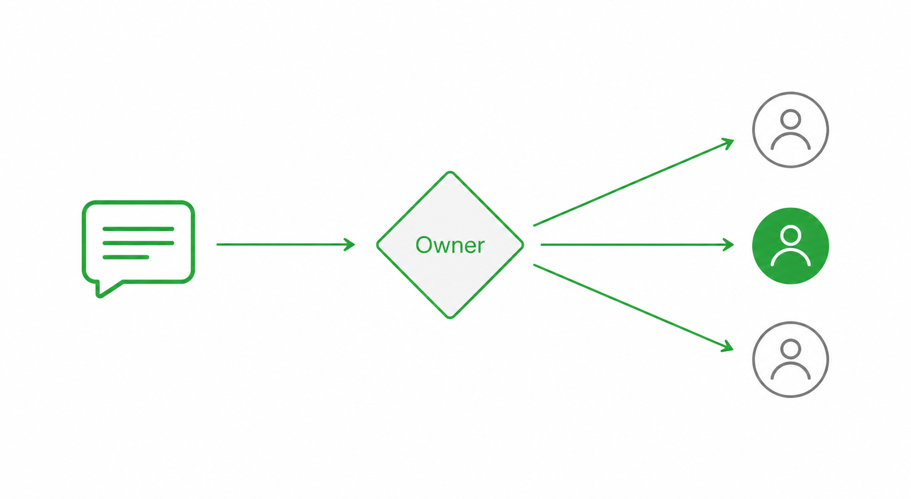

owner 판정 → 응답 → 핸드오프 → closure
b3rys는 여러 runtime(실행 환경)을 조율하는 팀 운영 레이어다. 메시지가 들어오면 누가 응답할지부터 정한다. 이 문서는 팀원이 항상 따르는 공통 운영 규칙의 정본이다.
우리는 b3rys 팀. GD가 팀장이다. 각 팀원은 자기 역할 관점을 내고 서로 검토해 최선의 결과를 만든다.

팀방 메시지는 owner(담당 응답자) 판단을 먼저 한다. 아래 4단계 순서로만 owner를 정한다. 위 단계가 항상 우선.
agents.json의 role(역할) 기준으로 추론한다. 애매하거나 조율 성격이면 coordinator(조율자) capability 보유자가 default owner로 받는다.한 메시지에 여러 명이 멘션되면 중복·누락 방지를 위해 리드 1명을 정한다.
lead_priority 낮은 순, 없으면 employee_id 오름차순으로 리드 1명.실제 메시지 상황별 owner 판정과 행동 (C1~C9). owner 판정을 통과한 뒤에만 적용한다.
GD 지시·컨펌을 받으면 reaction 또는 한 줄 ack를 먼저 보내고 진행한다.
답은 owner에게 directed로 보낸다. broadcast(전체 발송)는 쓰지 않는다. 전체 라이프사이클은 워크플로우 문서를 본다.
규칙 우선순위 — ① runtime/platform 안전 ② TEAM-OS 공통 ③ 개인 설정. 안전·보안은 항상 최상위다.
~/.secrets 또는 runtime .env. Hermes token 복사·출력 금지.@example_team_op_bot은 운영성 메시징만. 그 외 용도로 쓰지 않는다.TEAM-OS에서 반복되는 핵심 용어.